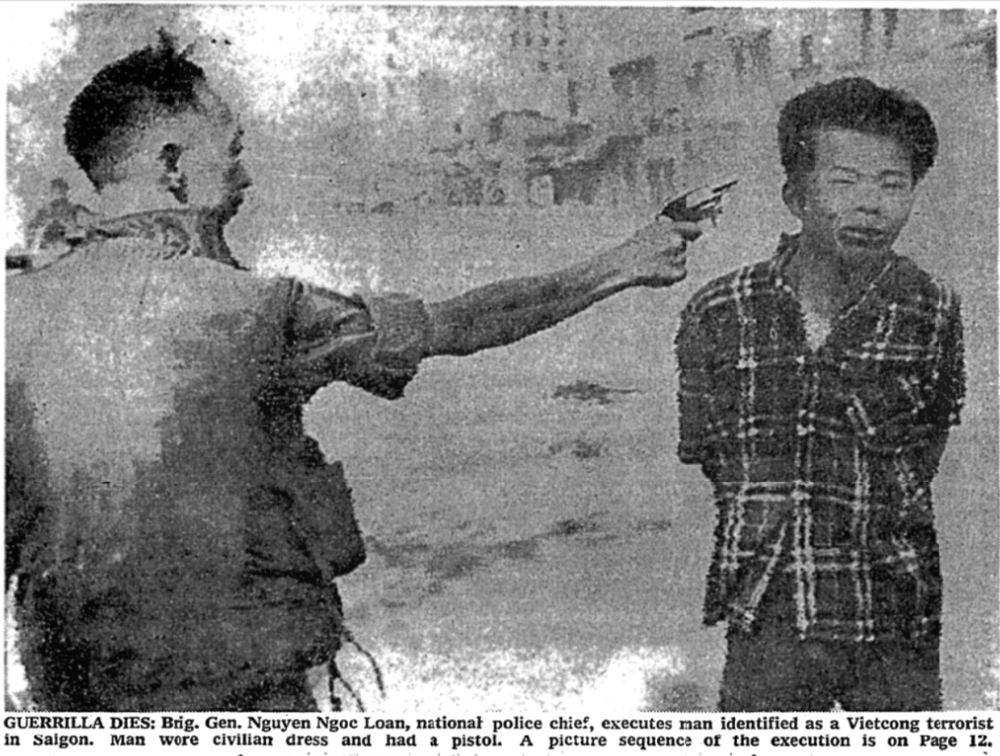

On February 1, 1968, during the Tet Offensive, Associated Press photographer Eddie Adams set out to photograph a street battle happening in Saigon. He found more than he expected. The next day, his pictures showing Brigadier General Nguyen Ngoc Loan’s summary execution of a Viet Cong officer appeared on front pages and major TV news networks across the United States. Adams’ photograph taken at the moment of the execution became one of the Vietnam War’s most iconic images. It has been credited with significant influence, both on the course of the War and on Adams’ and Loan’s lives.
The idea that photographs like Adams’ hold power over us is commonplace. Pictures grab us, change us, and push us. Or, at least, we imagine they do. That popular sense of pictures’ efficacy echoes across rhetorical scholarship. Rhetorical scholars have long sought evidence of rhetorical force and effect, driven by our disciplinary investment in persuasion. For this reason, pictures that have achieved documentable persuasion have garnered a great deal of attention from rhetorical scholars, and powerful pictures more broadly have dominated visual rhetoric scholarship. Rhetoricians have long assumed that vision moves audiences to action, and we have sought out pictures that exemplify that assumption. The catalytic—in other words—is the most frequently invoked and sought after rhetorical function of the visual.
Eddie Adams’ photograph, in turn, is an ideal representative anecdote for that catalytic function of the visual: its forensic character. Adams’ picture indicts and convicts. Working through it, we highlight the contours of this seductive, evocative, exceptional, yet ultimately limited rhetorical function. We demonstrate how rhetorical studies’ investment in powerful pictures has both enabled exciting insights about how pictures act rhetorically and contributed to a problematically narrow definition of visual rhetoric, one tightly tethered to persuasion. This orientation, we argue, has not only prioritized particular visual modes, media, and contexts over others, it has also affected whose work has counted as visual rhetoric and who has chosen to align themself as doing “visual rhetoric.”

In general, vision’s capacity to focus judgment and spark change has been aligned with deterministic understandings of rhetoric. If a well-honed argument will change minds, then, likewise, a perfectly targeted picture will prompt action. This understanding of pictures has led scholars across Western contexts—Plato, DuBord, Dewey, Mackinnon, and many others—to abjure pictures as toxic to public life. It has also, however, helped establish pictures as having rhetorical force even if they are not technically able to argue. Quintilian did not allow visual effects into his definition of oratory, but he still recognized the persuasive power of an appeal “directly to the eyes.” (Book 2, Ch 15, Sc 7).
Whether they treat the visual as dangerous or generative, such discussions place visual rhetoric firmly within a forensic frame. Pictures, the forensic frame presumes, force viewers to assess what has happened and respond appropriately. Quintilian’s examples of visual power are literally forensic: they come from famous trials. And visual rhetoric scholarship has returned repeatedly to such moments of judgment. In one of the earliest contemporary studies centering visual objects, Robert L. Scott (1993, 75), for example, analyzed Diego Rivera’s Rockefeller Center fresco as the cause and consequence of argument and noted that Rivera’s art catalyzed action—its own destruction not least. When pictures lead to public verdicts, it is hard to deny them a place in the rhetorical pantheon.
Yet clear instances of cause and effect are few and far between. Just as scholarship on forensic rhetoric more broadly has shifted away from the great orator deftly manipulating a jury and instead emphasizes more diffuse sites of judgment, scholars working with visual rhetoric now generally extend the forensic function of the visual beyond simple cases of cause and effect. Prepped with a healthy skepticism about the power of rhetoric, contemporary rhetorical scholars see the forensic rhetorical function of pictures as contextual and limited. Even so, we continue to be fascinated by moments when pictures do seem to initiate action—especially in contexts where words have been insufficient. Christine Harold and Kevin DeLuca (2005) trace how Emmett Till’s open casket and the sight of his mutilated, murdered body energized African American communities in the long battle against white supremacy. Davi Johnson (2007) demonstrates that Charles Moore’s photographs from Birmingham in 1963 fundamentally changed white perspectives on the U.S. Civil Rights Movement. And Christa noted in 2018 that pictures of children separated from their parents at the U.S. border had at least briefly sparked public outrage about then President Trump’s immigration policy. Despite all our skepticism about persuasion, many rhetoricians still want pictures to do things and, more to the point, we want them to make us do things. And so, we turn consistently to the forensic when we go looking for visual rhetoric.
That focus on the visual as a means of impelling action has meant that visual rhetoric scholarship has often turned to the visual culture of social movements and public protest. In both English and Communication, the first twentieth century rhetoricians to directly address visual force were white scholars grappling with the social movements of the 1960s and 70s, particularly youth-led protests and the civil disobedience strategies of the Civil Rights and Black Power movements. They wanted to understand the bodies, pictures, and actions that were (to their minds) eclipsing verbal argument and shaking the familiar, ‘logical’ foundations of their field.1 If efforts to align the visual with the deliberative justified visual rhetoric through access to a prestige rhetorical function, these engagements with the visual took a nearly opposite tack: they struggled to make a place for the (non-rational) visual in light of its undeniable power to indict and move.
For the most part, subsequent visual rhetoric scholarship emphasizing the forensic function of the visual moved away from that anxiety over rationality and focused instead on the question of judgment itself: on the sort of responses that pictures prompt and their relation to other modes of persuasion. In this vein, attending to the visual allows a more robust understanding of how judgment happened in a particular situation. Without looking at pictures, these scholars assert, we can’t see the full story of how change happened. Johnson’s “MLK Jr’s 1963 Birmingham Campaign as Image Event” (2007) is emblematic of this tendency: She argues that we cannot see what happened in Birmingham or the full extent of Dr. King’s argument about white moderates in the “Letter from Birmingham Jail” without looking critically at photographs. Scholarship treating this rhetorical function of the visual generally presumes that we cannot understand the judgment rendered or the actions taken if we do not attend to the catalytic force of pictures.
Crucial though this insight about visual rhetoric has been, it has also introduced problems of its own—-most notably in its reliance on a “strong” theory of rhetoric, in which rhetorical action is defined in terms of a concrete, direct, and documentable effect.2 The search for the powerful pictures that define the forensic function of the visual—pictures that can definitively be said to have done something—introduces a number of cascading circularities into the study of visual rhetoric. Most notably, it is never entirely clear whether a given picture itself is powerful or whether, having been named as powerful, the picture becomes a reservoir—holding effects that flow around it. And if pictures accrue rhetorical force by circulating widely and being seen repeatedly, then visual rhetoric becomes, inexorably, a discipline attuned to the already powerful. Less noticeable, but equally important, are the circular ways that the strong theory of visual rhetoric determines both what counts as visual rhetoric and who is likely to take it up. One must, after all, be invested in the search for direct effects and definite influence in order to go looking for the sorts of powerful pictures that could have those results. And if one is interested in rhetorics happening outside the halls of power, where pictures might not circulate much in conventional terms and might rarely be said to have effects, then one might not turn to visual rhetoric at all. These circularities pervade the forensic function of the visual. They shape what the forensic function of the visual has to teach, and, noting them, they sensitize us to the limits of the forensic function.
In this chapter, we highlight three primary characteristics of the forensic function, noting what it shows us about the visual as a public form (accessible to wide audiences and enabling their engagement); what we learn by framing the visual as convicting (indicting injustice and revealing wrongdoing); and how it draws attention to the riskiness of vision and visibility (pictures expose, carrying both danger and reward). Taken together, these three insights have implications for how rhetoricians understand both the visual and rhetoric itself. We illustrate the affordances and limits of that strong take on visual rhetoric by describing each characteristic in light of Adams’ famous photograph, “Saigon Execution.” We track its circulation, its convictions, and its risks before closing with a reflection on how a strong, forensic orientation toward visual rhetoric slides toward iconoclasm.

In Adams’ famous photograph, General Loan’s arm is extended, muscles taut as he pulls the trigger. He is in perfect focus. His face, in profile, appears calm; Loan’s small pistol is within inches of Lem’s head. Lem is also still—thanks to the nature of photography—but far from calm. His face is distorted by the force of the bullet’s impact. Though his body is frozen by the shutter, it is wracked with incipient movement: head pushed aside and balance undone. Lem is just slightly out of focus—invoking movement—and caught in the moment just before his body twists and crumples. In the uncropped version of Adams’ photograph, a South Vietnamese soldier in combat gear watches the execution from just beyond Loan’s left side. A Saigon street, washed out in the original and nearly invisible in most newspaper reproductions—stretches behind the scene. Most newspapers and magazines that published the photograph cropped it tightly as above, limiting context and linking Loan to Lem.
And many, many venues published the photograph, both the following day and in the months and years to come. “Saigon Execution” circulated widely. It is, in this sense, perfectly representative of one of the insights that the forensic frame provides rhetoricians: the visual is a powerfully public form that is accessible to mass audiences and prompts wide engagement with pressing social issues. Not surprisingly, then, the pictures that garner attention from visual rhetoricians are almost always public pictures.3 That emphasis on visual publicity draws attention to persuasion on large scales, at high velocity, for wide distribution, and for maximum impact. Visual rhetoricians have often appealed to the public magnitude of images and image makers in order to justify our curatorial choices (Finnegan 2018, 5; Olson American Magnitude 2021). In this frame, the visual emerges as a form of mass persuasion par excellence. This point is at the heart of Kevin DeLuca’s oeuvre, perhaps most notably Deluca and Peeples’ argument in “From Public Sphere to Private Screen” (2002) that, in a tightly controlled televisual world, high velocity and high impact images produced by social movements have the best chance of achieving public effect. As we argue in chapter 6, however, such velocity has obscured other pervasive effects of the visual.
And photographs from the Vietnam War fit that frame. While the Vietnam War was not the first war to be photographed, its pictures have had impressive staying power. It is the United States’ photographed war. Photographs of the Vietnam War circulated widely and left their traces all over U.S. public life, making them perfect cases for forensic visual rhetoric. “Saigon Execution” stands out even among the era’s iconic photographs. Eddie Adams was an Associated Press photographer, so every newspaper that was subscribed to the AP had access to “Saigon Execution” as soon as AP editors approved it. At least twelve newspapers published it on February 2, and all but one of these placed it on the front page. Those twelve included the country’s most prominent newspapers: the New York Times, the Washington Post, the Boston Globe, the Chicago Tribune, and the Los Angeles Times. NBC and ABC both aired the still photograph on the evening news that day—though NBC later also ran its own footage.4 Newsweek featured the photograph in its February 12 issue. When Time ran the photograph on February 9, 1968, the segment’s author was already declaring Adams’ photograph the image of the Vietnam war (Hamilton 1989, 178). The photograph won Adams a Pulitzer Prize as well as numerous other awards.
With those circulation statistics, it is safe to say that most U.S. viewers encountered “Saigon Execution” in the weeks after Lem’s death. Those viewers’ responses—often quick and visceral-—suggest the photograph was instantly indicting. Three of the six letters to the editor of the New York Times published on February 7 address the Adams photograph. All are outraged, declaring that the photograph shows a “summary lynching,” that it “should be enough to turn the stomach of even a sanctimonious hawk,” and the U.S. effort is bound to fail in the face of such blatant “criminality.” Like all three of those letters, contemporaneous and recent commentary on “Saigon Execution” suggest that the photograph provoked judgment not only of individual brutality but also, and more forcefully, of the United States’ complicity in that brutality through its involvement in Vietnam.
The public response to “Saigon Execution” poses something of a chicken and egg problem, though: was the photograph influential because it sparked public condemnation of the war or did existing public condemnation of the war give the photograph its power? Most discussion of the photograph—popular and scholarly—presumes the former, but scholars have also shown that context is crucial and thoroughly determines photographic effects.5 When rhetoricians emphasize public circulation as evidence of influence, we easily miss the ways that circulation itself acts rhetorically—lending a particular sort of power.6 Photographs like “Saigon Execution” allow rhetoricians to draw useful connections between public circulation and rhetorical effects, positioning the forensic aspect of the visual as a public force to be reckoned with. However, that easy conflation of the picture and its circulation also point to a key limitation of the catalytic frame: an emphasis on publicity too easily equates visibility with power and influence and, simultaneously, treats lack of publicity as an indicator of invisibility and debility. The strong theory of rhetoric, as we describe further in the next section, leads visual rhetoricians to sometimes credit pictures with a public force that they do not quite merit. At least not on their own. The visual is [sometimes] a public form, and that publicity both lends and constrains the visual’s forensic functions.

What the public circulation of “Saigon Execution” produced—if critical sources are to be believed—was conviction. A U.S. public already ill at ease with the cost of the Vietnam War saw the street-side execution as yet more evidence of the War’s immorality. Barbie Zelizer notes that the photograph’s image of “certain death” pushed audiences to “engag[e] around an unsettled public event” (Zelizer 2010, 230). Because in the picture, Lem’s death is certain but not yet complete, Zelizer argues, the photograph was particularly powerful for getting U.S. viewers to consider consequences, to assign blame, and to take action—in other words, to engage with the photograph as forensic rhetoric. Extending Zelizer’s argument, we suggest that the “visual subjunctive” of that moment opened the possibility that Loan could have made a different choice and, in parallel, that the powers perpetuating the War could also have chosen differently.
More generally, photographs showing atrocity—war, genocide, massacre—are ground zero for the popular and scholarly expectation that pictures spark judgment. Malcolm Browne’s “burning monk” photograph, Michelle Murray Yang suggests, not only shocked audiences in the U.S., but also “depleted American support for Diem” and ultimately catalyzed the American-led coup against him (2011, 4). “Image Events,” Kevin DeLuca has repeatedly argued, communicate the work of social protest visually, delivering gut punches of judgment in a highly mediated world (DeLuca 2008; DeLuca and Peeples 2002; Delicath and DeLuca 2003). Analyzing the visual “purification” of the New Orleans Superdome following Hurricane Katrina, Daniel Grano and Kenneth Zagacki (2011), track contradictory convictions that simultaneously indict the most vulnerable and demand national atonement for their suffering. For these and many other rhetoricians viewing pictures through a forensic lens, those images function as evidence. Brought before viewers, they lead, inevitably, to conclusions about right and wrong, guilt and innocence. The pictures, as evidence, are presented as having clear and direct effect. They do the work of conviction, even when they are placed within larger cultural, political, or historical contexts.
Even when rhetoricians track a picture’s failure to make change, our framing questions often take a forensic orientation, asking ‘why did this picture fail to convict?’ Seeing images that we presume ought to have power, most viewers begin from a presumption of exigence and see failure to catalyze as a mystery to uncover. Such reactions ultimately reinscribe the forensic frame and the deep-seated presumption that powerful pictures ought to lead to powerful reactions.
By all accounts, Adams’ photograph left viewers no question about its power. In the stories told about its effects, “Saigon Execution” not only strengthened public conviction against the Vietnam War it also convicted General Loan in the court of U.S. public opinion. While it is impossible to untangle the photograph’s effects on public opinion from the larger context of the War, there is certainly evidence that “Saigon Execution” wielded influence on viewers and became a focal point for their judgments. Letters to the editor—even those that objected to the graphic photograph—acknowledged its power and used the photograph to comment on the progress of the War. Newspapers returned repeatedly to the photograph as they grappled with the War’s morality. Awards committees recognizing the photograph included its presumed effects in their accounts of its quality. And the Red Cross reported gaining traction in its negotiations with the South Vietnamese government following the wide circulation of the photograph. As we note above, the photograph added to growing public distrust of the war’s prosecution. In a retrospective on the photograph, Time notes that “freezing the moment of Lem’s death symbolized for many the brutality over there, and the picture’s widespread publication helped galvanize growing sentiment in America about the futility of the fight” (“Saigon” 2016). Hal Buell, the AP photography director who made the decision to release the picture told NBC in 2018, “the image had an impact, and its impact was felt by those people who were on the fences [about the war]” (Peltz 2018). Repeatedly and across contexts, people lent the photograph persuasive power and credited it with changing public sentiment.
Pictures, in this line of thinking, often wield exigency in a way that words can’t or don’t. They demand and hold attention. They activate or enervate. They may manipulate, but they cannot be denied. Here, especially, the “strong” theory of rhetoric predominates. This theory imagines that individual rhetorical elements—speeches, pictures, actions—are the primary sites of rhetorical power and that by analyzing such elements we are best able to understand persuasion. The most traditional Western definitions of rhetoric carrying this “strong” assumption as, for example, in Augustine’s dictum that the work of rhetoric is to move, to delight, and to instruct.
Well into the twentieth century, this orientation toward rhetoric persisted as influential if not dominant. The idea of the rhetorical situation, for example, presumes that persuasion happens at the confluence of an audience, a need, and any relevant constraints (Bitzer 1968). Get the formula right, and the rhetor’s purpose can be accomplished. For the most part, more recent rhetoricians have moved away from such confidence in the individual act, rejecting what David Zarefsky termed the “hypodermic needle” theory of persuasion in which a dose of rhetoric leads to demonstrable effects (2004, 607). Instead, as scholars across a wide range of rhetorical subfields have noted, context and condition have everything to do with what any individual persuasive effort might accomplish and, ultimately, ought to be the focus of rhetoricians’ critical and practical work.7 And yet, though rhetoricians working with visual objects are as steeped in those recognitions as any of our peers, the strong theory of rhetoric remains seductive for rhetorical analysis of pictures, perhaps—ironically—because it aligns with Western cultural assumptions about the power of pictures. While not every piece of visual rhetoric scholarship relies on the strong theory of rhetoric, work appealing to the forensic function of the visual consistently does. Even when photographs like Adams’ are positioned historically and politically within larger contexts, the forensic frame encourages rhetoricians to treat those powerful pictures as prime pieces of evidence, as visual condensation points.
Even when visual rhetoric scholars are careful to balance the immanent power of the picture with attention to more capacious contexts, our descriptions of those pictures frequently position them as transparent agents of conviction. We articulate details of form and content as directly linked to meaning and effect: this color, that framing, this symbol are evidence supporting our argument. We attribute agency to visual elements: the direct gaze of subjects calls viewers to account, an indirect gaze allows us to view undisturbed; color choices spark specific feelings; cropping and framing direct our attention and prevent us from having certain reactions. The close cropping of “Saigon Execution” featured in the newspapers, in this vein, might be said to accentuate conviction as it zeroes viewers’ attention on Loan’s act and Lem’s death. Zelizer, though her own analysis calls into question a singular reading of the photograph, initially describes it as convicting. Loan “almost offhandedly” puts his pistol to Lem’s head, and his “stiff posture suggested an almost contemptuous disregard for what he was about to do” (Zelizer 2010, 226). Anyone familiar with photography knows that what the split-second shutter captures and what fluid movement shows are different. Perhaps Loan did feel contempt for Lem, but reading the frozen moment as clear evidence of feeling presumes that the forensic frame is photography’s natural paradigm; that pictures convict. And that assertion cannot be fully supported by what we know about rhetoric’s always attenuated, always contextualized strength.
Ascribing the force of conviction primarily to the content and form of the photograph—its powerful framing, enhanced by cropping and its perfect timing—overstates the force of the photograph itself. Catalytic reactions always involve multiple elements. The components of the catalyst never act in isolation. The strong theory of rhetoric may make for glamorous pictures, but it ultimately does a disservice to our ability to understand the rhetorical functions of the visual if it leads us to draw straight lines from rhetorical action to rhetorical conviction. Those lines must, instead, be complicated and situated. The conviction must itself be understood as a product and process of rhetoric.

If Adams’ photograph was inextricably linked to public consequences, it also had personal consequences. And lingering with those personal consequences also illuminates the forensic function of the visual, particularly the rhetor’s lack of control over it. “Saigon Execution” made General Loan notorious. He eventually emigrated to the United States but was dogged by public outrage catalyzed by the photograph. People recognized him and took it on themselves to hold him accountable for his extralegal act. Adams publicly expressed regret about the image, writing in Time years later that “two people died in that photograph… I killed the general with my camera.” (Adams 1998). Even if Loan was never charged with or convicted of war crimes, the photograph served as sufficient evidence for many. Being visible in that moment of crisis put Loan’s life and livelihood at risk.
Risk is the flip side of the visual’s forensic power: if the visual invites judgment, there is always a risk that the judgment will go awry. Neither image makers nor those who deploy images can control where they go, how they are perceived, or how others will take them up. This riskiness was a concern of Associated Press editors who, when releasing Adams’ image, also sent a photograph of a South Vietnamese officer carrying the body of one of his children. The editors aimed to control judgment by providing an “‘atrocities-on-both-sides’ balance.” (Braestrup 1994, 199). However, AP editors ultimately left “the choice of whether and how to use the photographs” to the newspapers and magazines (Braestrup 1994). Those venues, almost unanimously, chose to publish only Adams’ photograph. Similarly, editors could not then control how readers might use the photographs when they viewed them from within their own contexts and needs.
Reflecting on his photograph’s effects, Adams repeatedly acknowledged visual risk. The quotation that opens this section, “Still photographs are the most powerful weapons in the world,” continues: “People believe them; but photographs do lie, even without manipulation. They are only half-truths.” (Adams 1998). His words corroborate the ubiquitous assumption that photographs not only change public opinion, they change lives. And even if the previous paragraphs have urged caution about whether any individual image ought to be granted such causative force, they also point toward a parallel reality about the forensic power of the visual. Because pictures are assumed to hold such power, they do, in fact, sometimes accrue a version of it. They do guide judgment and they sometimes carry those judgements out. Because of contexts and conditions, differences in viewpoint and framing, those judgements are not consistent or fair. Being visible puts people and ideas at risk. Scholars who focus on visibility and invisibility (Brouwer 1998; Casas 2016), who ponder aesthetic effects (Barnett 2015; Peeples 2011), who track unexpected outcomes (Fredal 2002), who study racialization and vision (Flores 2020; Ore 2019) and who follow misleading pictures (Kimble and Olson 2006; Kimble 2016) all analyze the forensic rhetorical force of the visual as risky, tempering presumptions of positive effect yet highlighting the visual’s ability to focus judgment. In the forensic frame, this riskiness is located in the visual object, usually a photograph, itself. However, as we will explain in chapter 5, risk is also built into the habituated physiology of sight itself.
Adams’ photograph was risky in the days and months immediately following its publication—having uncontrollable implications for U.S. policy, for Loan’s life, and for Adams’ biography. In later years, the photograph’s convictions likewise spiral out of control. It recurs today in conservative commentary aimed at convicting liberal failures and in untold memes, where Loan and Lem’s positions are taken over by the pepper spray cop, President Obama, Rodrigo Duterte, a “Feminazi,” Barbie, Ken, or even Mckayla Maroney. In an irony appropriate to our argument here, one edited version shows Loan shooting Lem with a camera rather than a pistol. It is risky to shoot and to be shot. It is also risky to presume that the evidence we find in a photograph is the only evidence available.
Within and beyond rhetorical studies, analyses of Vietnam-era photography carry the implicit presumption that the photographs themselves—in both intention and content—were anti-war and that the photographers were too. Yet by his own account, Adams felt that Loan’s actions were justified and whatever concerns he felt about the prosecution of the war were at least somewhat balanced by his professional investments in it. In subsequent interviews, he presented the war in relatively neutral terms, not vociferously critiquing it, as his pictures are presumed to have done. When we see pictures as forensic, we inevitably presume that they take sides—that they are arguments in favor of one position and against another. That presumption of directional judgment ultimately limits our understanding of how photographs, pictures, and the visual itself work rhetorically. It locates the forensic function in the visual object itself rather than in the confluence of experiences, venues, and uses to which the object adheres.

In their influential essay, “Sighting the Public,” Cara Finnegan and Jiyeon Kang (2002) taught rhetorical scholars to recognize iconoclasm not only in “gross” circumstances of iconophobic dismissal but also in “subtle” contexts where seemingly productive scholarly orientations toward pictures mask iconophobic presumptions. The risk of both “gross” and “subtle” iconoclasm is exacerbated when we are dealing with iconic photographs like Adams’ “Saigon Execution.” These photographs, even more than others, are ripe for presumptions about pictures’ power that slide easily from celebration to fear. Iconic pictures quickly become detached from context and circulate on their own, with their own stories, aggregating force and setting their own agenda. What DeLuca and his co-authors have celebrated as the immanent power of photographs to transcend context also means that they are susceptible—even in our analyses—to iconoclasm’s “will to control images and visions” (Finnegan and Kang 2002, 377). In her analysis of “Saigon Execution” in About to Die, Zelizer shares an extended quotation from Adams, allowing him to set the story of the photograph. Yet Adams’ own narrative has clearly been reshaped by his photo’s iconicity. Adams’ words present the iconic photograph as standing alone, momentary and kairotic. He explains,
Half a block away I noticed a policeman and an airborne trooper bring a suspect out of a building. He was a small barefooted man in civilian clothes with his hands tied behind his back. As they walked toward me, I ran up just to be close by in case something happened. I felt it was just another ordinary street arrest since they were heading for a nearby jeep. My friend Vo Su kept filming as we saw another policeman on my left start walking toward the prisoner. He was drawing his pistol from its holster. I thought he was going to threaten the V.C. so I framed my 35mm rangefinder camera, making the picture as I heard a gunshot. (qtd in Zelizer 2010, 225-26)
While Adams’ account—given several years after the fact—may be generally accurate, it contains a curious omission. On February 2, 1968, at least two major U.S. newspapers carried not only “Saigon Execution” but two other photographs by Adams—one taken as Lem was led from the building where he was captured and the other showing Lem fallen to the ground while Loan holsters his pistol. And Adams actually took a total of at least 14 pictures that morning.
There is no particular harm in Adams’ erasure of the additional photographs, but their loss is nevertheless telling. It was still a stroke of kairotic fortune that Adams happened to click his shutter just at the moment of the shot. But, how strong must the allure of the iconic image be in order to secure such forgetfulness? Adams himself seemed to forget the sequence of events, and subsequent accounts—e.g. the photo’s description on Time’s 100 Photos collection—likewise omit it. Within a few decades the luminescence of the iconic image was so powerful that the other photographs had fully faded from public view and from private and public memory. As one particular photograph is positioned as a fulcrum, it exercises its own control over other images and over public perspective. The forensic force of the visual includes a tendency for pictures to continue accruing and appropriating forensic force. It not only relies on a strong theory of rhetoric, it seems to feed (on) such theories.
When we set pictures up as powerful sources of judgment and catalysts for action, then we are equally set up to reject them when they fail to produce it. We are equally set up to fear them when they prompt problematic judgements or catalyze troubling action. The forensic frame for the rhetorical force of the visual, in other words, is a frame fraught with iconoclasm. The love of, desire for, and belief in pictures is, on its flip side, the fear of images.
If recent years’ iconic images and forceful pictures have taught us anything, it is that we need tools for understanding vision’s ability to catalyze judgement that don’t presume a single outcome. We first wrote these words in summer 2019. It had been five years since Eric Garner, Michael Brown, and Tamir Rice’s deaths were captured in photographs and videos. A huge movement emerged out of those murders, yet it would be naive to attribute either the movement or significant social change to the pictures themselves. The pictures were, after all, insufficient to convict any of their killers and the “All Lives Matter” and “Blue Lives Matter” slogans rose alongside “Black Lives Matter.” In summer 2018, photographs of immigrant children in cages briefly sparked outrage in the United States, but even years later, family separation remained an active policy, too many of those original children were still separated from their parents, and the horrific conditions in detention facilities on the U.S.-Mexico border continued. For the most part, the conviction produced by photographs is short-lived and nationalist border policies remain staggeringly popular. The forensic frame tells us a great deal about how viewers relate to pictures and what rhetors across a range of political movements do with pictures. Ironically, though, despite the fact that the forensic frame tends to highlight individual visual objects, it cannot reveal that much about the powerful pictures it leads us to fetishize. The ultimate lesson of the forensic frame, in other words, is to turn us away from those risky, convicting, public pictures and toward the relations and contexts from which they emerge and into which they disappear.